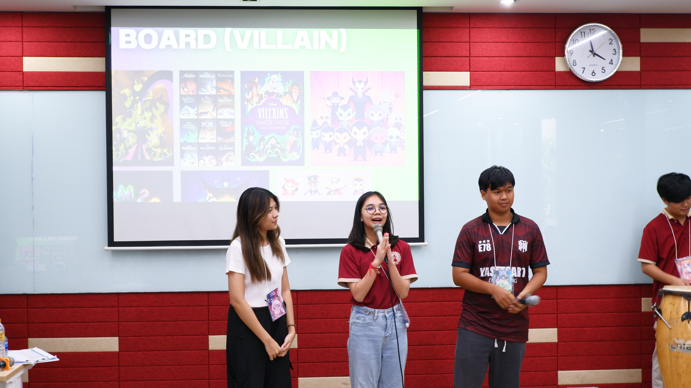

Three Universities Seminar
Faculty of Engineering, Chulalongkorn University ·Thammasat University · Kasetsart University
Overview
Served as Project Chair for the Three Universities Seminar, a collaborative project between Chulalongkorn University, Thammasat University, and Kasetsart University. Led project planning and coordinated communication between student teams from all three universities.
Responsibilities
- Led overall seminar planning and coordinated responsibilities across teams from all three universities.
- Served as a central point of coordination between representatives from Chulalongkorn, Thammasat, and Kasetsart University.
- Coordinated schedules, activities, and team responsibilities throughout the preparation process.
- Followed up on assigned tasks and worked with different teams to keep project preparation aligned with the agreed plan.
- Supported event execution and cross-team coordination during the seminar.
Photos

